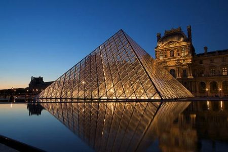
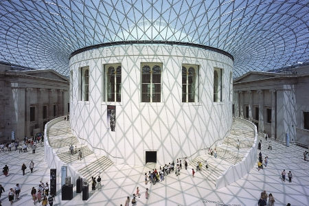
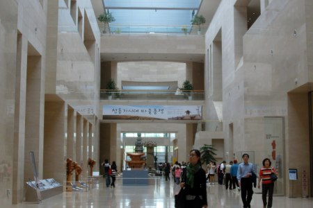

In this segment of our website we will focusing on some the top Galleries of the Word and in Pakistan as well.here is the list of some of them
Home of the most famous painting of the world, Mona Lisa, Louvre museum is the oldest and largest museum in the capital of France. Ever since its inception in 2007, the art gallery has topped the list of most visited museums in the world. 8.5 million in 2008, 2009 and 2010 and a whooping 8.8 million in 2011. A pantheon of western arts, the gigantic museum has many of the well admired pieces of artwork in the history of human civilization. In eight departments Louvre consists of 35,000 works of arts. Full of magnificent art, the extensive collection of various cultures has been collected over the past 500 years by successive French Governments. The best Greek, Assyrian and Islamic art collection in the world are held here. 
Founded in 1870 by a group of American nationals, the Metropolitan Museum of Art represents the works of art from Ancient Egypt and classical antiquity. The museum is a home to various sculptures and splendid paintings from almost all the European masters along with a wide collection of American and modern art. The museum also contains several assets of Asian, African, Byzantine, Oceanic and Islamic art – From extensive collections of antique weapons and armors to various aged musical instruments, accessories and costumes. Numerous prominent interiors, varying from 1st century Rome all the way through the contemporary American design, are permanently mounted in the Met’s galleries.

One of the world’s utmost art galleries of history and culture, the British Museum in London contains permanent collection, summing up to eight million works (the largest in existence). All the collected works from various continents are very comprehensive and supreme – documenting and illustrating the chronicle of human culture from its early stages to the present. You will easily spend a week and still miss some of the amazing masterpieces. However, make sure you do not miss the Holy Land rooms with artifacts of the Babylonians, Assyrians, Hittites, Israelites, Sumerians, Phoenicians, ancient Islamic and Canaanites societies along with the African, American and Rome Britian galleries. 
The main art museum of China located in Taipei, Taiwan, the National Palace Museum demonstrates more than four thousand years of Chinese art, from the Shang to the Qing era. These imperial collections of Chinese paintings are perhaps the greatest in the world. The museum also has a large collection of art documents and objects (more than 650,000) such as Chinese ritual bronzes, jade, ceramics, lacquerware, decorative carvings, enamelware, embroidery and tapestry, calligraphy, books and archival documents.
Historically significant, National Museum of Korea houses more than 220,000 masterpieces of relics and arts. Situated in the Yongsan Family Park after its re-location in October 2005, the flagship museum of Korean history and art is comprised of archeological and historical art galleries dating back to 1392 (presenting the earliest day of Korean civilization), paintings, calligraphy and beautiful Buddhist sculptures along with arts and ceramics illustrating the rich Asian culture. 
following is a list of meusem:

2014 sees the redesign of our website. Read more
.jpg)
.jpg)
.jpg)
Arts and crafts describes a wide variety of activities involving making things with one's own hands. Arts and crafts is usually a hobby. Some crafts (art skills) have been practised for centuries, others are more recent inventions.

The International Federation of Arts Councils and Culture Agencies (IFACCA) is the global network of arts councils and ministries of culture, with member organisations in over 80 countries. The IFACCA Secretariat provides services, information and resources to member organisations and their staff - from senior executives and policy makers, to researchers, grant makers and administrators - as well as the wider community.
Our vision is a world in which arts and culture thrive and are recognised by governments and peoples for their contribution to society. Our purpose is to support members to succeed and be a global voice advocating for arts and culture. The Strategic Plan ensures that we deliver our objectives for members and the sectors they represent; it also reflects our aspirations and contributions to the international arts and culture community.